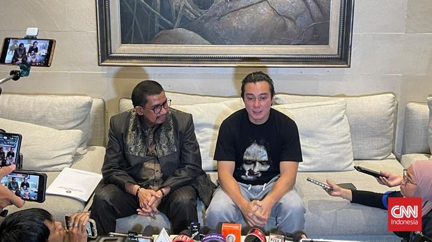

5 Seleb Indonesia Kontroversial 2024

Purwakarta, AboutNEws--Sepanjang 2024, wajah sejumlah seleb Indonesia mewarnai pemberitaan. Mulai dari perseteruan, perceraian, atau tindak tanduk yang memancing dahi netizen berkerut. Beberapa yang paling dramatis adalah perseteruan antara Nikita Mirzani dengan Vadel Badjideh, yang akar masalahnya sudah berlangsung sejak beberapa tahun lalu. Berikut lima seleb Indonesia kontroversial 2024:
1. Nikita Mirzani - Vadel Badjideh
Dalam beberapa tahun terakhir, biasanya Nikita Mirzani seorang yang tercantum dalam daftar seleb Indonesia kontroversial dalam setahun. Namun kali ini, lawan seterunya, Vadel Badjideh mendapat posisi yang sama. Alasannya tidak lain karena perseteruan keduanya, dari yang semula adalah masalah Nikita dengan anak sulungnya yang jadi kekasih Vadel, berkembang menjadi persoalan hukum dengan tuduhan serius: persetubuhan dengan anak di bawah umur dan pemaksaan tindakan aborsi. Menghadapi ancaman Nikita, Vadel Badjideh tak kendor. Ia menyewa pengacara Razman Arief Nasution yang semakin membuat kasus ini penuh drama Pengacara: Nikita Mirzani Mustahil Beri Maaf Vadel Badjideh.
2.Raffi ahmad
Tahun 2024 tampaknya riuh dengan berita kontroversi Raffi Ahmad, terutama semenjak suami Nagita Slavina ini dekat dengan pasangan Prabowo Subianto dan Gibran Rakabuming yang kemudian memenangkan Pilpres 2024. Buah kedekatan tersebut kemudian semakin menjadi kontroversi saat setelah dilantik menjadi Presiden RI, Prabowo menunjuk Raffi Ahmad sebagai Utusan Khusus Presiden Bidang Pembinaan Generasi Muda dan Pekerja Seni.Penunjukan tersebut pun terjadi setelah kontroversi Raffi Ahmad yang mendapatkan gelar kehormatan doktor Honoris Causa dalam bidang Event Management dan Global Digital Development dari UIPM dari sebuah lembaga bernama UIPM. Kontroversi itu berkembang menjadi pengusutan legalitas UIPM sebagai lembaga pendidikan. Raffi Ahmad Terima Gelar Doktor Honoris Causa, Netizen Curiga.
3. Ruben Onsu - Sarwendah
Pasangan Ruben Onsu dan Sarwendah masuk dalam daftar selebriti kontroversial tahun ini tidak lain karena kabar gugatan cerai yang diajukan Ruben terhadap Sarwendah. Gugatan tersebut memantik sejuta tanya publik terkait penyebab pasangan yang sudah melewati berbagai badai perkawinan tersebut, hingga muncul rumor mengganggu akan hubungan Sarwendah dengan Betrand Peto di luar status ibu dan anak angkat. Bahkan hingga pengadilan sudah menetapkan keduanya bercerai secara verstek pada September 2024, penyebab Ruben Onsu dan Sarwendah tetap menjadi sebuah misteri yang belum terpecahkan oleh publik.
4. Baim Wong - Paula Verhoeven
Selain Ruben Onsu dan Sarwendah, berita Baim Wong menggugat cerai Paula Verhoeven juga mengagetkan banyak orang. Apalagi tak banyak berita miring soal pasangan ini sebelumnya. Hingga kemudian, Baim Wong dengan berlinang air mata di depan wartawan menuding Paula Verhoeven telah berselingkuh dengan orang yang ia kenal. Namun Paula sendiri masih bungkam soal hal ini. Sampai saat ini, keduanya masih bertarung di pengadilan agama dengan peluang rujuk hampir nihil. Keduanya sama-sama ingin berpisah, sementara hak asuh anak masih diperebutkan. Pada 8 Oktober 2024, Baim Wong dengan berlinang air mata di depan wartawan menuding Paula Verhoeven telah berselingkuh dengan orang yang ia kenal.
5. Rizky Febian dan Mahalini
Rizky Febian dan Mahalini menjadi sorotan publik untuk dua hal: sukses bersanding di pelaminan melewati beragai perbedaan termasuk soal agama, dan menuai pertanyaan saat harus ikut persidangan soal keabsahan pernikahan tersebut. Semua gara-gara Rizky Febian dan Mahalini mengajukan sidang istbat untuk menetapkan pernikahan mereka pada Mei 2024 sah di mata hukum dan agama. Kemudian KUA mengatakan bahwa pasangan itu tak pernah mendaftarkan pernikahan mereka. 'Buku Nikah' Rizky Febian dan Mahalini Bikin Heran Pengadilan Agama Padahal pernikahan dan pestanya dihelat di sebuah hotel mewah dan mengundang berbagai nama pesohor. Meski tertutup dari publik, keduanya juga memamerkan buku nikah yang kemudian jadi pertanyaan saat permohonan sidang keabsahan pernikahan itu diajukan. Kemudian pada November 2024, Isbat nikah Rizky Febian dan Mahalini ditolak oleh Pengadilan Agama Jakarta Selatan (Jaksel). Keduanya diharuskan melakukan prosesi pernikahan ulang. Berdasarkan keterangan Pengadilan Jaksel, penolakan dilakukan lantaran ada rukun nikah yang tidak terpenuhi.